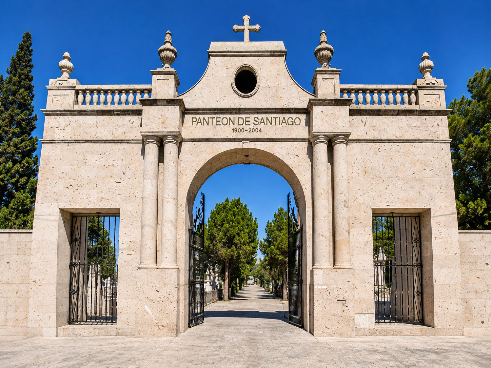

Historias de Saltillo ↗Panteón de Santiago
Ciudad delos muertos
Ocho tumbas, cuarenta fotografías y tres lecturas expertas. Un recorrido sin orden obligatorio por la arquitectura con que Saltillo ha querido recordar a sus muertos.
Acceso principal · Foto: Homero Sánchez
La ciudad de piedra
Antes que en palabras, la muerte aprendió a hablar en piedra. Levantó muros para quien ya no estaba, puso un ángel donde faltaba una voz, cortó una columna a la mitad para decir que una vida no alcanzó su capitel. Cada tumba es una frase dicha en cantera, hierro y mármol. Habla de quien descansa, pero también de quienes eligieron cómo recordarlo: de lo que creían, de lo que podían pagar, de lo que amaban y del tiempo que les tocó vivir.
El panteón es una ciudad con otra lentitud. Tiene avenidas y callejones, fachadas que miran hacia el camino y casas que apenas asoman del suelo. Hay monumentos que compiten por la eternidad y nombres que el viento casi ha borrado. Hay estilos que llegaron con familias extranjeras, canteras que viajaron en tren desde San Luis Potosí, jerarquías trazadas en metros cuadrados. Como en la ciudad de los vivos, no todos sus habitantes ocupan el mismo lugar ni son recordados de la misma manera.
Caminamos el Panteón de Santiago, uno de los más antiguos de Saltillo, a través de ocho conjuntos funerarios fotografiados por Homero Sánchez y leídos junto al historiador Carlos Recio Dávila y los arquitectos Arturo Villarreal y Griselda Salas. No hay un orden para mirar. Hay formas, símbolos y materiales que se responden de una tumba a otra, y una pregunta que se queda en el aire: qué permanece de nosotros cuando ya no estamos, y qué seguimos intentando decir.
Quienes leyeron las piedras
Tres miradas
Cómo recorrer
- El plano
- Ocho tumbas sobre el trazo del panteón. Entra por cualquiera.
- Cinco vistas
- De lo general a lo particular: plano general, primer plano y tres detalles.
- La mirada
- Mueve el cursor o arrastra con el dedo para mirar alrededor. Un clic te acerca.
- Los hilos
- Materiales, símbolos y lenguajes que unen unas tumbas con otras.